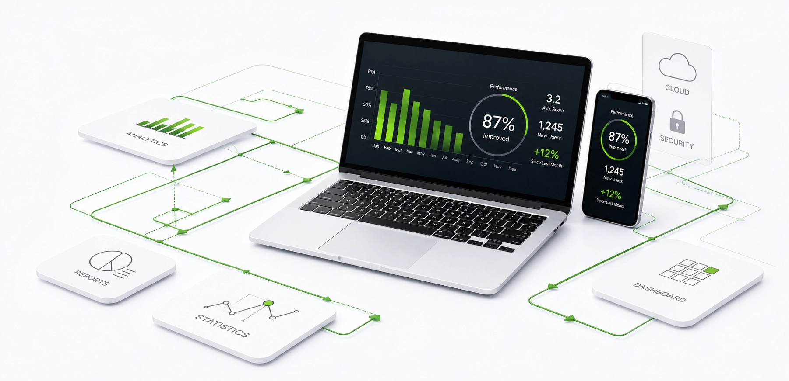
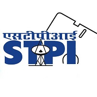
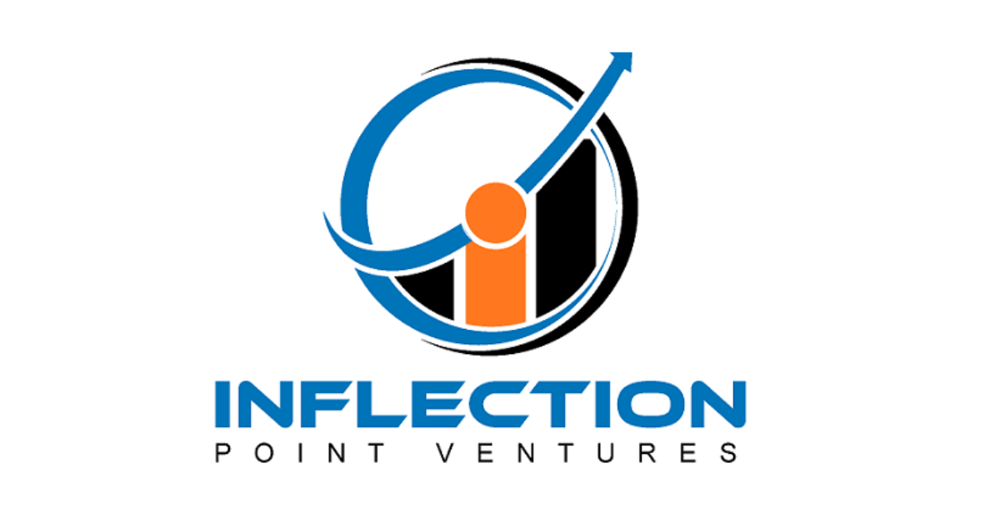
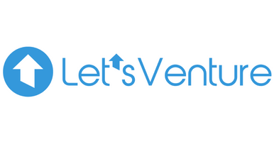

Maximizing Value Across the Electronics
We help businesses recover more value, reduce waste, and build a circular future.

The Future of Electronics Isn't Just Manufacturing. It's Maximizing Every Product's Lifetime Value.
The electronics industry is undergoing a fundamental shift. As products become more advanced and lifecycles shorter, organizations must recover value from returns, excess inventory, damaged products, warranty claims, and end-of-life assets. Sustainability commitments, regulatory compliance, and rising material costs are transforming how businesses think about asset recovery.
The future belongs to organizations that view every electronic product not as waste, but as an asset with multiple value recovery opportunities.
.webp)

India is one of the world's largest & fastest-growing electronics manufacturing hubs.

1.75 Million MT of e-waste generated in India every year.

Organizations are shifting to value recovery, reuse & material circularity.

EPR compliance, ESG & sustainability are now strategic priorities.
Building the Future of Electronics Value Recovery
Fuevation is building the operating backbone for the circular electronics economy.
Through our flagship platform, MobiGarage, we help brands, manufacturers, retailers, insurers, enterprises, and ecosystem partners maximize value across the complete electronics lifecycle. By combining technology, operational expertise, and an integrated recovery network, we transform returned, excess, damaged, and end-of-life electronic assets into measurable business value.
Our approach goes beyond waste management. We help organizations extend product lifecycles, recover valuable components and materials, improve compliance, strengthen reverse supply chains, and advance their sustainability goals-all through a single, integrated platform.
Every electronic product deserves more than one opportunity to create value. Before a product is dismantled or recycled, we prioritize reuse, refurbishment, repair, redistribution, or component recovery.
Only when reuse is no longer viable does responsible recycling become the next step.
This philosophy guides every decision we make-helping our partners recover greater value, reduce waste, conserve resources, and build more sustainable businesses.
Because the most sustainable product is the one that doesn't need to be manufactured again.
What Makes Fuevation Different

Technology-Led Decision Making
Every asset is evaluated to identify its highest-value recovery pathway.

Integrated Lifecycle Platform
One partner across refurbishment, liquidation, parts harvesting, compliance, & recycling.

Circular Economy by Design
Reuse is prioritized before material recovery, maximizing outcomes.

Nationwide Execution
Technology-backed operations with an extensive network across India.
Helping Every Electronic Asset Reach Its Highest Potential
Every electronic asset follows a different journey. Our integrated capabilities ensure every asset is directed toward its highest-value recovery pathway-delivering stronger financial outcomes while supporting sustainability and regulatory compliance.
Extend Product Life
Refurbishment & Repair
We restore functional electronics to extend their usable life, maximize resale value, and reduce the environmental impact.
Unlock Working Capital
Liquidation Solutions
Transform excess inventory, returns, DOA units and obsolete stock into recovered value through remarketing & liquidation.
Maximize Component Recovery
Parts Harvesting
Recover reusable components from damaged and end-of-life devices, extending the value of products.
Recover Critical Materials Responsibly
Recycling
When reuse isn't possible, we recover valuable materials responsibly through environmentally sound recycling.
Simplify Compliance
EPR & Circularity
End-to-end EPR compliance, traceability, reporting & responsible end-of-life management.
Build Smarter Reverse Supply Chains
Collection, Logistics & Recovery
Trace & operate efficient reverse logistics networks that improve visibility and maximize recovery.
Intelligence Determines the Right Journey for Every Asset
Our proprietary Lifecycle Intelligence Framework™ ensures every asset is evaluated, routed and recovered to deliver the highest value at every stage.
Understand the assets-condition, history, quantities, location and recovery potential.
Technology-enabled diagnostics, grading and data analysis assess technical condition and residual value.
Assets are routed to their optimal outcome-reuse, refurbishment, liquidation, parts recovery or recycling.
Our integrated network manages collection, logistics, recovery, compliance and recycling through a single workflow.
Clients achieve higher recovery rates, shorter turnaround times and measurable B2B ESG impact.
Transparent reporting, analytics and insights continuously improve future recovery decisions.
Technology That Powers Smarter Recovery Decisions
Our platform combines operational intelligence, automation and data analytics to enable smarter decisions throughout the electronics lifecycle.

.svg)
Asset Intelligence
Digital diagnostics, grading, valuation and condition assessment.
.svg)
Recovery Intelligence
Data-driven routing to the highest-value recovery pathway.
.svg)
Marketplace & Liquidation
Connecting recovered assets & components with verified B2B buyers.
.svg)
Compliance & Traceability
End-to-end visibility, audit trails and EPR reporting.
.svg)
Analytics & Insights
Dashboards, ESG reporting and performance intelligence.
.svg)
Operational Visibility
Track assets, inventory, logistics and recovery performance.
Trusted Across the Electronics Value Chain
Electronics Manufacturers (OEMs & ODMs)
EMS Providers
Retail & Distribution
Enterprises & IT
Insurance
Telecom
Government & Public Sector
Recyclers & Material Recovery
E-commerce & Marketplaces
Why Organizations Choose Fuevation

Reuse-First Philosophy
We maximize product life before material recovery, delivering stronger financial and environmental outcomes.
Integrated Capabilities
One partner across refurbishment, liquidation, reverse logistics, compliance, parts recovery and recycling.
Technology-Driven Decisions
Every asset follows a structured, intelligence-led recovery pathway.
Nationwide Execution
Pan-India operational capability supported by trusted ecosystem partners.
Sustainability by Design
Every process delivers measurable circular economy outcomes and ESG goals.
Trusted Relationships
Working with leading OEMs, manufacturers, retailers, insurers and enterprises across India.
Creating Measurable Value for Businesses and the Planet
Every recovered asset creates value beyond financial returns. We help organizations improve performance while contributing to a more sustainable electronics ecosystem.


